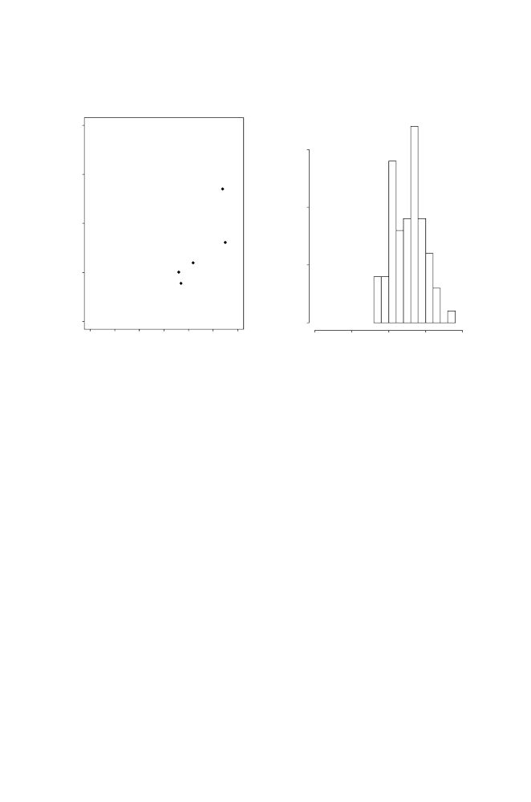

A.7 Graphics
497
Histogram of x.num
x.num
-10 -5 0 5 10
0 5 10 15
Frequency
B.
0 5000 1000 1500 2000
Brain V
ol.
0 10000 20000 30000 40000 50000 60000
Body Weight
A.
Brain Volumes as a Function of Body Weights for Hominids
Fig. A.1.
Graphical output from
plot
and
hist
functions. For function calls, see
the text. Font sizes have been modified for legibility in this book format.
abline(h=0)
#Adds horizontal line y = 0
abline(v=3)
#Adds vertical line, x = 3
abline(-0.1,0.2)
#Adds line y = 0.2x + (-0.1)
Corresponding to
lines()
there is a function
points()
, which adds data
points to the plot in the graphics window. For example,
>plot(x,y)
#Generates scatterplot for data x,y.
>points(u,v,pch=2)
#Data points for u, v added with
different print character.
When plotting data from different sources on the same plot, we may wish to
change the line types for connector lines. This can be done by adding the argu-
ment
lty=n
, where
n
= 1
,
2
, . . .
will generate different types of lines (different
sizes of breaks, for example). For example,
points(u,v,type="l",lty=2)
adds to an existing plot additional data as broken lines only.
A.7.2 Histograms
Histograms are another common graphical application. We illustrate this by
first generating a set of numbers drawn from a normal distribution to give us
something to plot.
> x.num<-rnorm(75,mean=2,sd=2)
> hist(x.num)